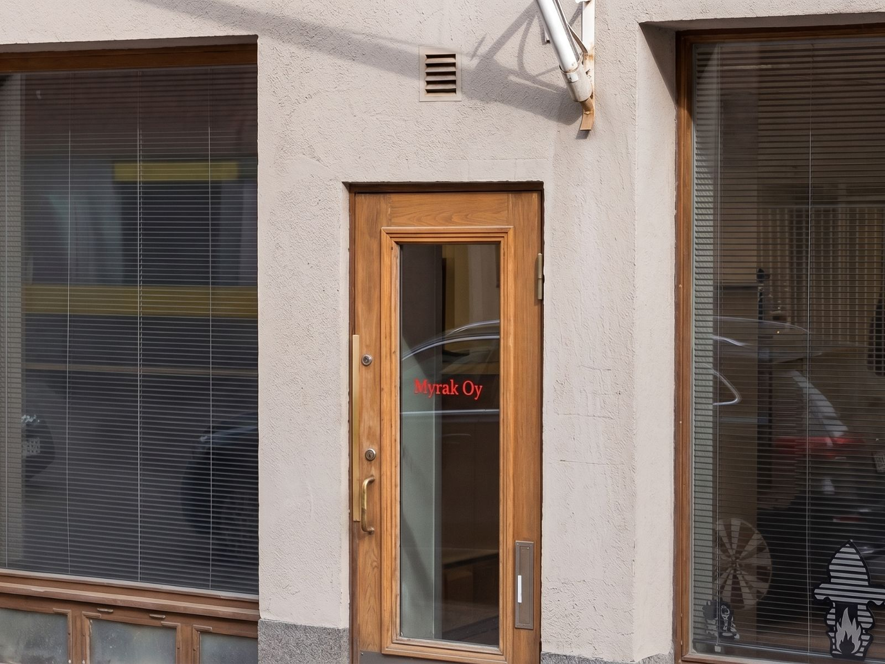
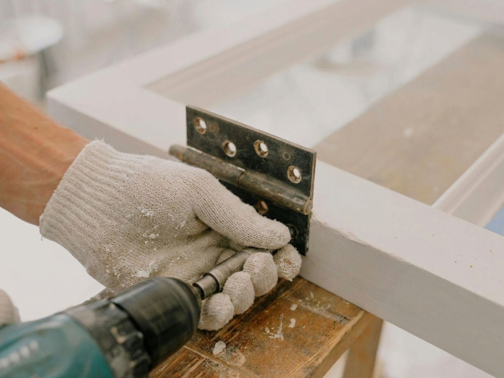
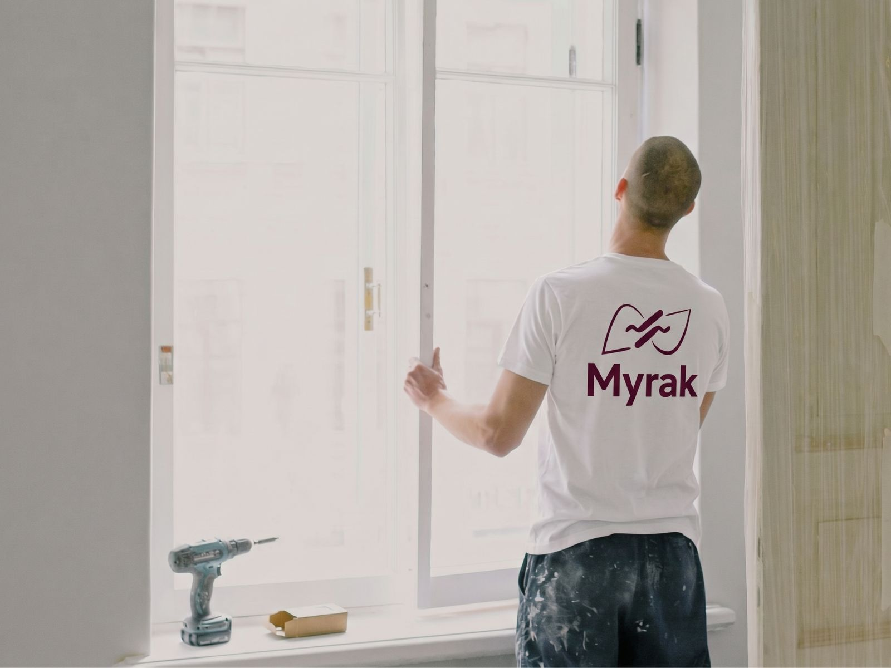

Tästä meidät tunnistaa


JULKISIVUTYÖT | PELTITYÖT | KORJAUSTYÖT
Luotettavaa korjausrakentamista pääkaupunkiseudulla jo 10 vuoden ajan
Tästä meidät tunnistaa
Kattavat korjausrakentamisen palvelut yhdeltä luukulta

Rappausten uusiminen, paikkaustyöt, muurattujen julkisivujen korjaukset ja parvekekunnostukset.
Lue lisää →
Pelti- ja tiilikattojen uusimiset, paksupinnoitukset, piipunhatut ja sadevesijärjestelmät.
Lue lisää →
Parveke- ja terassikaiteiden kunnostus, aidat, portit ja kattoturvatuotteet.
Lue lisää →
Kipsi-, betoni- ja valumetallikoristeet julkisivu- ja sisätilakorjauksiin.
Lue lisää →
Porraskäytävien ja kellaritilojen kunnostukset minimoiden häiriöt asukkaille.
Lue lisää →
Ikkunoiden ja ovien entisöinti sekä uusiminen ammattitaidolla.
Lue lisää →Myrak Oy on suomalainen perheyritys, joka on erikoistunut vanhojen arvokiinteistöjen vaativiin julkisivu- ja vesikattokorjauksiin. Pääasiallinen toimialue on pääkaupunkiseutu.
Asiakkaitamme ovat taloyhtiöt, säätiöt, seurakunnat ja kiinteistösijoitusyhtiöt. Teemme jokaisen projektin alusta loppuun itse — ilman aliurakoitsijoita.
Tutustu palveluihin

Olemme keränneet kokemusta korjausrakentamisen alalla jo kolmelta vuosikymmeneltä. Erityisosaamistamme ovat terastirappaukset, revityt rappaukset sekä kipsi- ja betonikoristeet.
Toteutamme korjausurakat kokonaisvaltaisesti, töiden suunnittelusta aina takuutarkastuksiin saakka. Kokonaisuus rakentuu asiakkaan toiveiden ja tarpeiden mukaisesti.
Korjausrakentamisessa vastuullinen ja luotettava toiminta ovat keskiössä. Olemme vuosien saatossa rakentaneet kustannustehokkaat toimintamallit, jotka ovat palvelumme laadun perusta.
Toimintamme on keskittynyt pääkaupunkiseudun suurehkoihin kiinteistöjen ja taloyhtiöiden julkisivukorjausurakoihin. Panostamme laadukkaaseen ja pitkäikäiseen lopputulokseen.
Olemme toteuttaneet satoja onnistuneita hankkeita ympäri pääkaupunkiseutua

Vesipellin uusimistyöt

Julkisivujen kunnostus- ja pintakäsittelytyöt

Julkisivun täysremontti — rappaustyöt, kipsikoristeet, ikkunoiden kunnostus
Pääkonttori Helsingin Eirassa ja kaksi verstasta Vantaalla


Vanhojen ikkunoiden kunnostus ja entisöinti.

Metallityöt, koristeet ja puuosien valmistus.
Myrak Oy
Pietarinkatu 11 A90
00140 Helsinki
Y-tunnus: 2802156-7